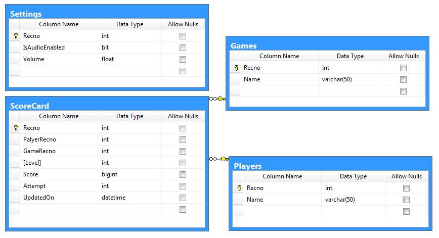
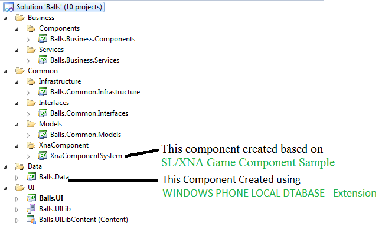

This sample code provides the Windows Phone game development with MVVM pattern and Local database for storing the player and score card information.
This BALL app is available in Windows Phone Store
To run this code sample in development machine, machine should have Visual Studio 2010 or higher with Windows Phone 7.1 and SQL Server.
This Sample code has two types for ball games.
Local Database has created from SQL Server database using the WINDOWS PHONE LOCAL DATABASE extension.
Database structure as below:

Table Descriptions
This Balls solutions has 10 projects with four different categories, see the solutions structure below:

Project Descriptions
Please see the Game Page Xaml.cs file code.
public partial class CounterGameView : PhoneApplicationPage, ICounterGameView
{
public CounterGameView()
{
InitializeComponent();
}
public void SetViewModel(Common.Interfaces.Base.IBaseViewModel viewModel)
{
this.DataContext = viewModel;
}
protected override void OnNavigatedTo(System.Windows.Navigation.NavigationEventArgs e)
{
if (e.NavigationMode == NavigationMode.Back)
{
XAML.Shell.Navigate();
}
else
{
(new CounterGameViewModel(this)).LoadData(e.Uri.ToString());
base.OnNavigatedTo(e);
}
}
protected override void OnNavigatedFrom(System.Windows.Navigation.NavigationEventArgs e)
{
((CounterGameViewModel)this.DataContext).UnloadContent();
base.OnNavigatedFrom(e);
}
}
public partial class CounterGameView : PhoneApplicationPage, ICounterGameView { public CounterGameView() { InitializeComponent(); } public void SetViewModel(Common.Interfaces.Base.IBaseViewModel viewModel) { this.DataContext = viewModel; } protected override void OnNavigatedTo(System.Windows.Navigation.NavigationEventArgs e) { if (e.NavigationMode == NavigationMode.Back) { XAML.Shell.Navigate(); } else { (new CounterGameViewModel(this)).LoadData(e.Uri.ToString()); base.OnNavigatedTo(e); } } protected override void OnNavigatedFrom(System.Windows.Navigation.NavigationEventArgs e) { ((CounterGameViewModel)this.DataContext).UnloadContent(); base.OnNavigatedFrom(e); } }
Game View Model Base interface
namespace Balls.Common.Interfaces.Base
{
/// <summary>
/// Game View Model - Base Interface
/// </summary>
public interface IGameBaseViewModel : IBaseViewModel
{
void LoadContent();
void InitalizeContent();
void ReloadContent();
void Update(object sender, GameTimerEventArgs e);
void Draw(object sender, GameTimerEventArgs e);
void UnloadContent();
}
}
namespace Balls.Common.Interfaces.Base { /// <summary> /// Game View Model - Base Interface /// </summary> public interface IGameBaseViewModel : IBaseViewModel { void LoadContent(); void InitalizeContent(); void ReloadContent(); void Update(object sender, GameTimerEventArgs e); void Draw(object sender, GameTimerEventArgs e); void UnloadContent(); } }
I hope this code sample will help to create basic Windows Phone Game with MVVM pattern & Local database and also let me know your comments on this sample.